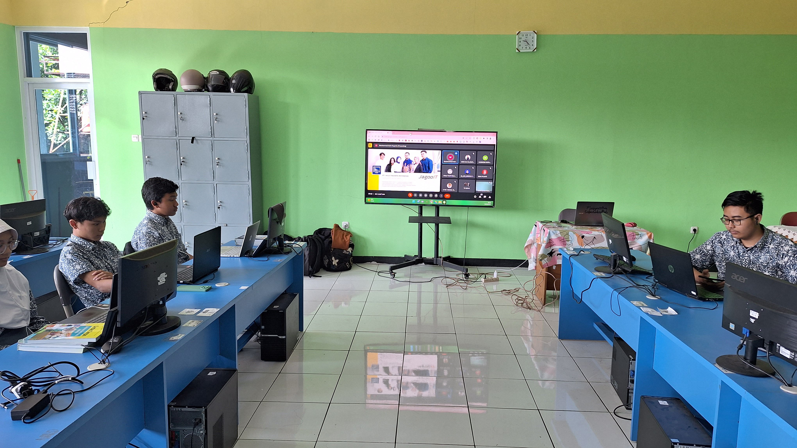

Membentuk generasi unggul, terampil, dan berkarakter mulia melalui pendidikan kejuruan yang relevan dengan kebutuhan dunia industri masa depan.
Jelajahi Program JurusanMempelajari dasar teknik kelistrikan, sistem instalasi penerangan, dan pemeliharaan tenaga listrik industri.
TITLMempelajari ilmu tentang sistem kontrol otomatis, pemrograman PLC, pneumatik, dan robotika industri pabrik.
TOIMempelajari elektronika dasar, perakitan perangkat audio video, dan perbaikan perangkat komunikasi elektronik.
TAVMempelajari keahlian dasar coding untuk pengembangan perangkat lunak (website, desktop application, mobile app) dan database.
RPLMempelajari ilmu instalasi perangkat komputer, administrasi jaringan, merakit router internet, serta infrastruktur fiber optik telekomunikasi.
TJKTMempelajari teknik produksi media digital, desain grafis, editing video periklanan, fotografi komersial, hingga pembuatan animasi interaktif 2D/3D.
DKV / MMPendaftaran PPDB SMKN 4 Bandung tahun ajaran 2026/2027 telah resmi dibuka. Calon siswa dapat mendaftar secara online melalui jalur prestasi, afirmasi, atau zonasi dengan melengkapi dokumen persyaratan yang berlaku.
Diberitahukan kepada seluruh siswa kelas 12, Ujian Praktik Nasional akan dilaksanakan secara tatap muka di laboratorium masing-masing jurusan. Seluruh siswa diwajibkan mengenakan seragam praktik (wearpack) sesuai jadwal.
